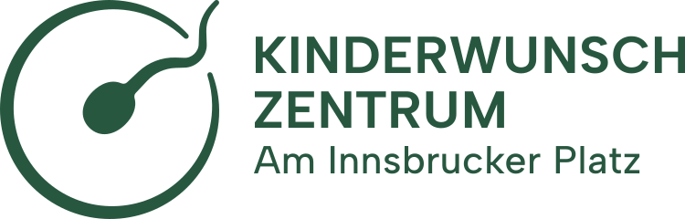
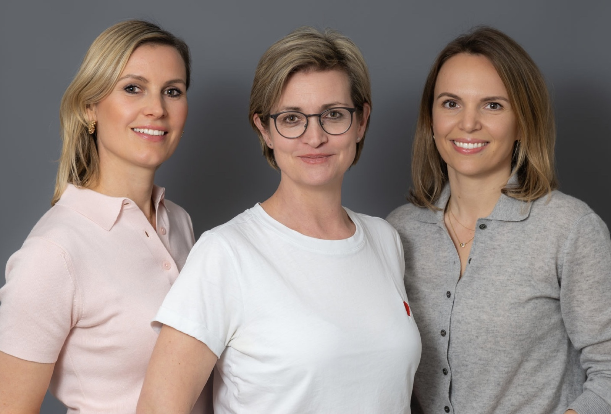
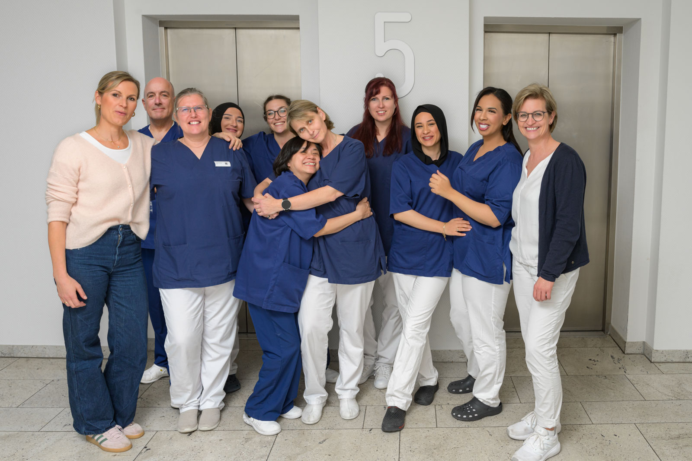
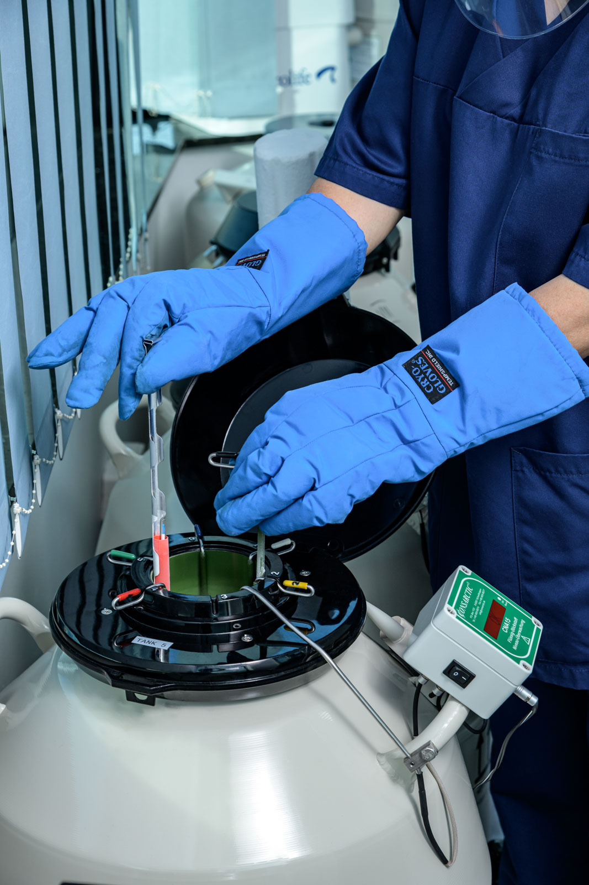
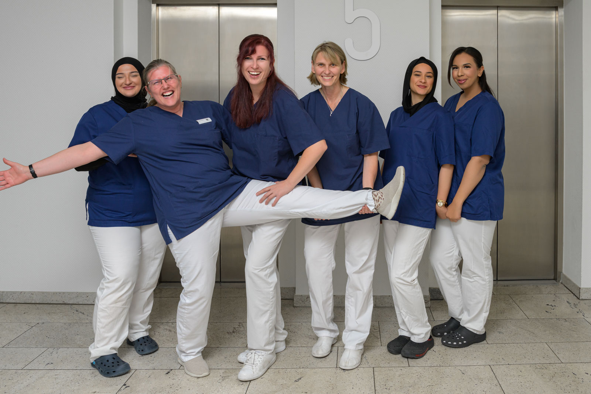

MFA (w/m/d) für unser frauengeführtes Kinderwunschzentrum in Berlin-Friedenau. Ab sofort. Voll- oder Teilzeit. Keine Wochenenden.

Wir sind Dr. Franziska Pauly, Claudia Ehlert und Dr. Nora Bolz — drei Fachärztinnen für Gynäkologie mit Schwerpunkt Reproduktionsmedizin. Seit Januar 2026 führen wir gemeinsam das Kinderwunschzentrum am Innsbrucker Platz, das seit 2002 in Berlin etabliert ist.
Die Praxis wird im Sommer 2026 komplett renoviert. Im Herbst eröffnen wir in modernen, hellen Räumen — und bauen das Team von Grund auf neu auf. Du bist von Anfang an dabei und gestaltest mit. Vom Setup der Arbeitsplätze über digitale Abläufe bis hin zu kleinen Ritualen im Praxisalltag.
Ein frauengeführtes Kinderwunschzentrum mit jungen Ärztinnen ist in Berlin selten. Wir wollen einen Arbeitsplatz schaffen, an dem fachliche Tiefe, Wertschätzung und ein freundlicher Umgangston selbstverständlich sind.

Drei junge Fachärztinnen mit Schwerpunkt Reproduktionsmedizin. Flache Hierarchien, direkte Kommunikation.
Komplette Renovierung im Sommer. Du gestaltest die neuen Arbeitsplätze und Abläufe mit.
Über zwei Jahrzehnte Erfahrung in Reproduktionsmedizin. Patientinnen kommen seit Jahren zu uns — darauf baust du auf.
Bei uns lernst du Bereiche kennen, die in der allgemeinen Gynäkologie nicht vorkommen: Eizellentnahmen, Embryotransfers, Kryokonservierung, hormonelle Stimulationsbehandlung.

Wir verstehen, dass ein guter Arbeitsplatz mehr ist als nur ein Gehalt. Hier ist, was du bei uns bekommst.
Leistungsgerechte Bezahlung, transparent verhandelt — wir richten uns nach deiner Erfahrung und Verantwortung.
Vollzeit oder Teilzeit — bei Teilzeit auf Wunsch 4-Tage-Woche. Planbar Mo–Fr, keine Wochenenden, keine Nachtdienste. Beginn ab sofort möglich.
Urlaubsplanung gemeinsam mit dem Team — nicht von oben verordnet.
Direkt am S+U Innsbrucker Platz. Wir bezahlen dein Firmenticket — oder du least dein JobRad über uns.
Jährliches Budget für deine Entwicklung. Reproduktionsmedizin-Spezialisierung, Sonografie-Kurse, Abrechnungs-Updates — du wählst.
Betriebliche Altersvorsorge und Krankenzusatzversicherung mit Arbeitgeberzuschuss.
Du kennst eine gute MFA? Empfiehl uns weiter — und erhältst 1.000 € Prämie, wenn sie bleibt.
Du baust das Setup der renovierten Praxis mit auf — Arbeitsplätze, Abläufe, digitale Tools. Deine Stimme zählt von Tag 1.
Eine abgeschlossene Ausbildung zur Medizinischen Fachangestellten (MFA) ist die Basis. Erfahrung in Gynäkologie oder Reproduktionsmedizin ist ein Plus, aber kein Muss — wir bilden gerne ein, wenn der Rest passt. Was wir nicht beibringen können: Empathie, Zuverlässigkeit und Lust auf ein neues Team.

Unser MFA-Team ist heute vielfältig und eingespielt — und freut sich auf Verstärkung. Wir sind ehrlich: Mit der Praxisübernahme verändert sich einiges. Das ist auch der Reiz. Wenn du zu uns kommst, bist du nicht die Neue im versteinerten Team, sondern jemand, der das neue Team mitgestaltet.
Übrigens: Patientinnen siezen wir — im Team duzen wir uns. Vom ersten Tag an.
Hauptstr. 65, 12159 Berlin-Friedenau, 5. OG. Ein Knotenpunkt: Ringbahn, U-Bahn, S-Bahn und mehrere Buslinien an einer Station.
10 Min Charlottenburg · 8 Min Tempelhof · 12 Min Neukölln · 20 Min Ostkreuz
5 Min Steglitz · 15 Min Friedrichstraße · 25 Min Wannsee
Direkter Anschluss Richtung Nollendorfplatz und Innenstadt-Linien
5 Buslinien an der Haltestelle — Anbindung in alle Richtungen Schöneberg, Wilmersdorf und Steglitz
Wir wissen, dass dein Tag voll ist. Unsere Bewerbung ist deshalb kurz: ein paar Felder, kein Anschreiben, Lebenslauf optional. Wir melden uns — oft noch am selben Tag, spätestens in 3 Werktagen.
Wenige Felder, kein PDF nötig.
Oft noch am selben Tag.
15–20 Min mit einer unserer Ärztinnen.
Praxis und Team erleben — bezahlt.
Wir besprechen ehrlich, ob es passt.
Die Bewerbung läuft über unser Bewerbungsportal. Ein Klick, wenige Felder, fertig.
Zum BewerbungsportalLieber direkt? Schreib uns an karriere@kinderwunschpraxis-berlin.de oder ruf an: +49 30 85757930.
Datenschutz-Hinweis: Deine Bewerbung wird über unser Bewerbungsportal verarbeitet. Die Entscheidung über Vorstellungsgespräche treffen ausschließlich unsere Ärztinnen. Mehr dazu in unserer Datenschutzerklärung.
Ab sofort. Wir suchen mehrere MFAs — Vollzeit und Teilzeit, je nach deinem Modell. Falls du noch eine Kündigungsfrist einhalten musst: kein Problem, wir warten gerne ein paar Wochen auf die richtige Person.
Nein. Eine abgeschlossene MFA-Ausbildung reicht als Basis. Wenn du aus der allgemeinen Praxis oder Gynäkologie kommst, lernst du die reproduktionsmedizinischen Abläufe bei uns Schritt für Schritt. Wir bilden gerne ein.
Kernzeiten Mo–Fr, mit Früh- und Nachmittagsdiensten — aber keine Wochenenden und keine Nachtdienste. Bei Teilzeit ist auf Wunsch ein 4-Tage-Modell möglich. Konkrete Stundenmodelle besprechen wir individuell.
Die Renovierung läuft Juli bis September 2026, Eröffnung im Oktober. Bis dahin arbeiten wir in den bestehenden Räumen — also keine Sorge, du landest nicht erst in einer Baustelle. Wenn du im Sommer startest, gestaltest du das Setup der neuen Praxis aktiv mit.
Nein. Die Erstbewerbung ist ein kurzes Formular mit ein paar Fragen. Ein Lebenslauf-Upload ist optional. Wenn wir uns kennenlernen, kannst du Zeugnisse und Referenzen gerne mitbringen — vorher musst du nichts schicken.
Du kommst für 3–4 Stunden in die Praxis und begleitest das Team. Du siehst die Abläufe, lernst Kolleginnen kennen, stellst Fragen. Wir bezahlen den Halbtag mit einer angemessenen Aufwandsentschädigung — egal wie die Entscheidung danach ausfällt.
Im Team und im ganzen Bewerbungsprozess duzen wir uns — bei dir bleiben wir also von Anfang an beim Du. Nur unsere Patientinnen sprechen wir mit Sie an.
Deine Bewerbung läuft über unser Bewerbungsportal und wird dort sicher verarbeitet. Wir speichern die Unterlagen sechs Monate nach Abschluss des Verfahrens, dann werden sie automatisch gelöscht. Die Entscheidung über ein Vorstellungsgespräch trifft immer eine unserer Ärztinnen. Details in der Datenschutzerklärung.
Wir freuen uns auf deine Bewerbung. 60 Sekunden, kein Anschreiben.
Jetzt bewerben